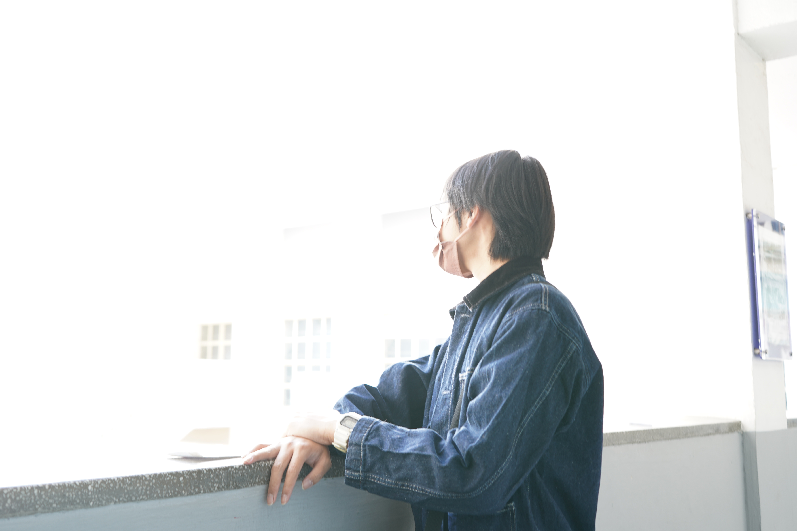
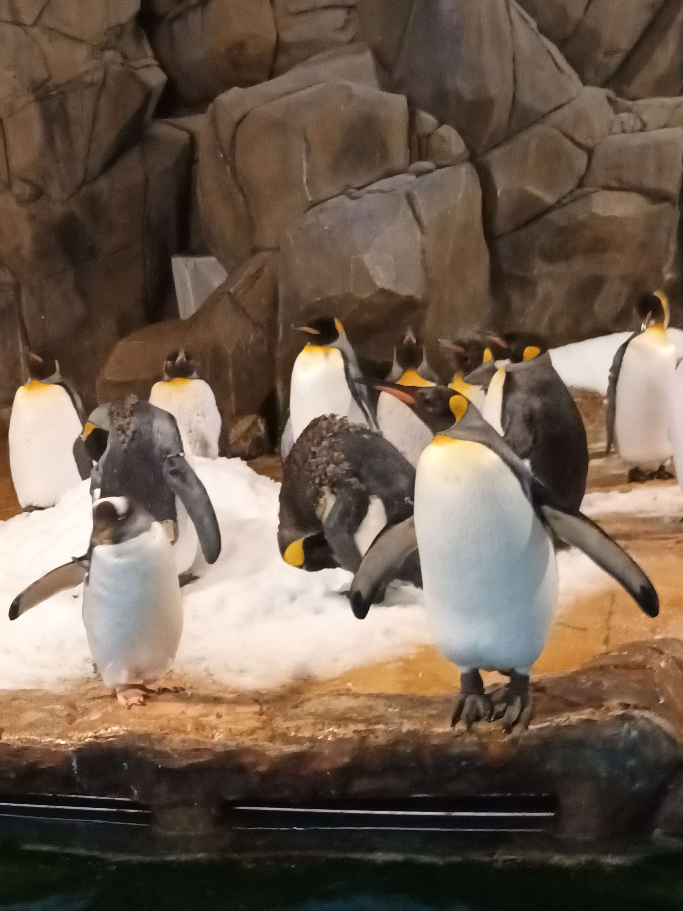
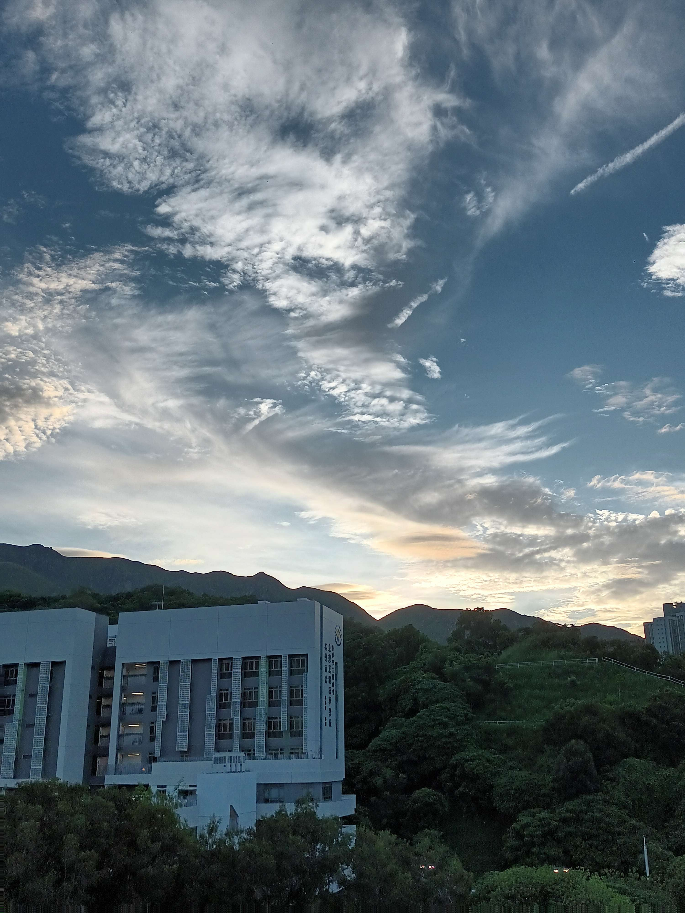
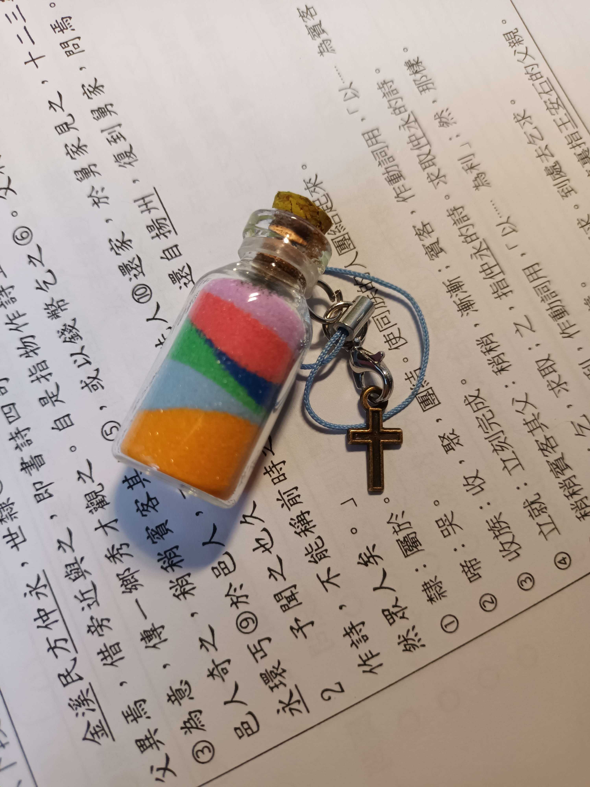
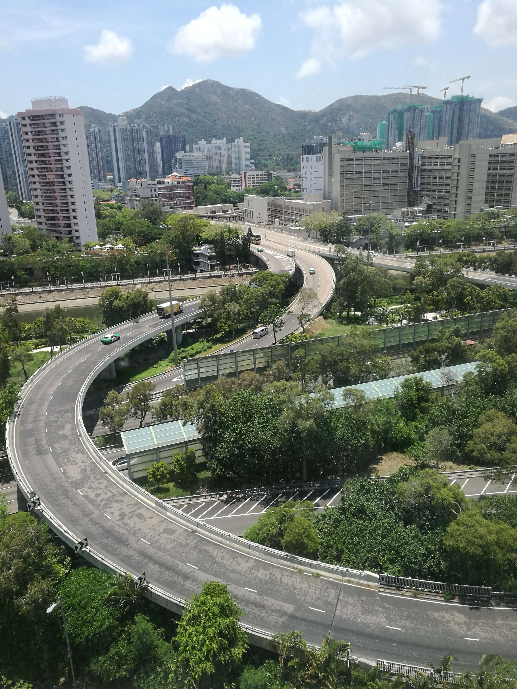

嗨！我是喵樂，一個垃圾廢人
 Taken by Sony A7iii 54mm f/11 1/60s ISO 4000
Taken by Sony A7iii 54mm f/11 1/60s ISO 4000 Taken by Sony A7iii 28mm f/5.6 1/100s ISO 6400
Taken by Sony A7iii 28mm f/5.6 1/100s ISO 6400 Taken by Sony A7iii 28mm f/5.6 1/50s ISO 6400
Taken by Sony A7iii 28mm f/5.6 1/50s ISO 6400 Taken by Sony A7iii 28mm f/5.6 1/50s ISO 12800
Taken by Sony A7iii 28mm f/5.6 1/50s ISO 12800 Taken by Sony A7iii 28mm f/6.3 1/50s ISO 10000
Taken by Sony A7iii 28mm f/6.3 1/50s ISO 10000 Taken by Sony A7iii 36mm f/6.3 1/50s ISO 12800
Taken by Sony A7iii 36mm f/6.3 1/50s ISO 12800 Taken by Sony A7iii 38mm f/4 1/10s ISO 100
Taken by Sony A7iii 38mm f/4 1/10s ISO 100 「望門興嘆」 Taken by Sony A7iii 37mm f/4 1/10s ISO 100
 Taken by Sony A7iii 29mm f/4.5 1/10s ISO 100
Taken by Sony A7iii 29mm f/4.5 1/10s ISO 100 Taken by Samsung SM-A226B 5mm f/1.8 1/26s ISO 2159
 Taken by Samsung SM-A226B 5mm f/1.8 1/33s ISO 669
 Taken by Samsung SM-A226B 5mm f/1.8 1/111s ISO 257
 Taken by Huawei VIE-L29 4.5mm f/2.2 1/817s ISO 50